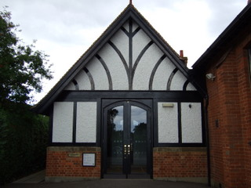

News
Aylesbury Vale May 2013 events
Free events in May in Aylesbury Town Centre
Every Wed Artist in Residence - St Mary’s Church 10am - 2.30pm
On now Exhibitions at the County Museum - 6 July Splendid Stitches and Exotic Embroidery. Exhibitions at Queens Park Art Centre Aylesbury Camera Club, portrait paintings and Bucks Open Studios exhibitions.
25 May - 29 June Muir Trust Artist in Residence. Live Music at Shoot Pool
Every Thurs 9pm - 1am- Jam night, all welcome.
Every Friday, 10.30pm - 1am- Live cover/tribute bands
Every Saturday 7pm - 10pm- New original artists 10.30pm - 1am- Live cover/tribute bands.
Weds 1 Tue 7 & 21 Thurs 9 Sat 11 Sat 18 Tue 21 Sat 25 Tue 28 Thurs 16 Weds 22 Thurs 30 Fri 31 Fri 31 Reading Group with a difference - Aylesbury Library 2.30pm - 3.30pm Chatterbooks Children’s Reading Group - Aylesbury Library 4:30 - 5:307 - 11 years, 6pm - 7pm 11 - 15 years. Baby Signing - Aylesbury Library 10am - 10.30am St Mary's Craft Fair - St Mary's Church 10am - 2pm A wide selection goods made by local crafts people.
Love Your Local Market Fortnight - Market Square Wednesday 15 - Wednesday 29 May Come and support your local market as the Square joins in this national celebration of markets. Fancy trying your hand at becoming a market trader for the day? Call 01296 585880. Love Your Local Market Fortnight - Market SquareEnjoy live music in the market.
Love Your Local Antiques Market - Market Square 11am - 2pm Raid your attic and bring your small collectibles for free valuation by John Bly. Last year an unappreciated vase was valued at £1000 - what treasures might be hiding in your house?
Love Your Local Market Day Market Square and Kingsbury 11am - 3pm Come and visit the band and face painters in the Market Square, and for one day only pay a visit to our newest residents in Meerkat Square!
Love Your Local Farmers’ and Antiques Market Market Square 9am - 2pm Come along to the Farmer’s Market to buy some local produce and pick up a hidden gem at the Antiques Market. Bring the kids along to meet some of their favourite characters Peppa Pig, Dora the Explorer, Super Mario and Sonic the Hedgehog.
Storytime and Craft - Aylesbury Library 10am - 11am Bring the children along for a story and a free craft activity. Quiz Afternoon - Aylesbury Library 2.30pm Magic Show - Market Square 11am - 3pm Roll up, roll up for a magical event in the Market Square. Colonel Custard takes to the stage to entertain you with tricks and illusions.
Another Free Holiday Thursday event! Live Music Broad Leys 9pm
Live Music in the bar every last Friday of the month. Funk Soul Friday - Slug and Lettuce 9pmDJ Paul Williams every last Friday of the month. Every Tues, Wed, Fri & Sat Aylesbury Markets - Market Square
Dash For Dads
Dash for Dad! 1km, 2km and 5km Fun Runs
Father’s Day Sunday 16th June 2013
West Wycombe Park, Buckinghamshire
1km and 2km Run
£2 entry fee Aged 3 years +
5km Run
£5 entry fee Aged 13+ years
Once registered we will send you a fundraising pack to help you raise as much as you can for Child Bereavement UK
Enter online at www.dashfordad.org.uk
Tel: 01494 568912
Email:
Annual Parish Meeting
The Wing Parish Council will be holding the Annual Parish Meeting on 10th May from 7.30pm at Wing Hall. Meet your Councillors, see which local organisations have received grants, meet the Scouts, Wing Players, Wing Tennis Club to name a few groups who will be there.
Local Election Results
Netta Glover retains her position in the newly enlarged Wing Division in the May elections for 2013.
Wing Community Library - Progress Report – 24 November 2011

Wing Community Library - Progress Report – 24 November 2011
The Library Steering Group, formed early this year, consists of a core of eight members, who have been meeting regularly. We have been joined at different times by our District councillor, Parish Councillors, representatives of the County Council, one of the local school librarians and other interested parties. We have distributed and analysed a questionnaire; and sub-committees have been focussing on finance, volunteers and the Business Plan. Recently one member has been shadowing the current librarians and writing a manual for volunteers; and the possibility of becoming a charity is being explored.
The Steering Group is committed to running not just a Library Service, but an extended community resource for the benefit of the residents of Wing and surrounding villages, in partnership with the County Council. In particular we wish to retain this facility for those who cannot easily obtain Library services elsewhere and need a place close to home i.e. children and older people.
Our Business Plan has now been submitted to the County Council Library Strategy Project Board. Once approved there will be a transition period from January to August 2012, during which time volunteers will work alongside the present librarians and receive training from the County Council to allow the Library to commence as a Community Library, run solely by volunteers, from September 2012. During the transition period policies and procedures will be finalised for health & safety, volunteers, stock, marketing and finance.
Once the Community Library is fully established the Steering Group will become the Management Committee with an equal status for all, but members will take on specific responsibilities.
Our aims are:
- to create and follow a financially sustainable plan for the running of the Library;
- to maintain the service in the current premises;
- to encourage and increase membership and usage by Wing residents and those of neighbouring hamlets and villages;
- to increase the opening hours and expand the stock;
- to enhance the IT facilities in order to serve more people of all ages offering opportunities for lifelong learning;
- to establish the Library as an information hub;
- to provide additional activities - in particular those that will generate income and bring ‘added value’ to the community;
- to work in collaboration with the existing school libraries to encourage reading and bring enhanced opportunities to young people;
- to involve residents in running the Library and making decisions about its future direction in order to give a sense of ownership
In conclusion, our mission is:
‘To provide a welcoming environment for local people to enjoy books, have easy access to information, develop lifelong learning interests, and meet with each other.’
Tabby Cat Found
Do you own a male Tabby Cat of approximately 4 to 5 years old that has gone missing? He was found in Ledburn on the 15th July. He is very friendly and affectionate and I would like him to be reunited with his owner.
If you think this is your cat, could you please contact Nikki on 07984 256931
Library Questionnaire Results Summary
The Wing Library Group would like to thank everyone who took the trouble to complete and return the questionnaire. Although the response was disappointingly small there are some interesting findings.
All credit to Lynn Stuart for encouraging some schoolchildren to fill in questionnaires. Although many of them do not live in the village, they give us some access to how young people think about the idea of a library and where there interests lie.
Of the non-school responses, it is interesting that almost half of those do not actually use Wing Library currently. This indicates (as also found in Chalfont St Giles) that many people support the idea of a local library and therefore may be willing to give some financial support as Friends.
With regard to opening times – perhaps more of the young people would use the library if it was open at times that suit them better. Having access to the computers was particularly appealing to the younger people – though for some the main interest is to be able to play games. At least it would keep them off the streets!
Of the various other activities asked about, for the non-school respondents a second hand book shop, use of a photocopier, coffee & reading newspapers, and a village history project were the most popular – and some of these could actually generate some income.
There were many offers of help, and these will be followed up – perhaps in particular those people with the rarer finance, business and marketing skills.
Wing Library Developments
Wing Library is going to become a community partnership library. This is due to reductions in funding for library services across Buckinghamshire.
A group of interested villagers are looking at what this will mean for the village.
We would like to hear your views so that the ‘new’ library will develop in the way that people want.
Questionnaire
Please download the questionnaire (docx - requires Word 2007 or higher) and spend a few minutes to let us know your thoughts.
Please send your replies by email to or by hand/post to Wing Library by 31 June 11.
Further information about Wing Library and developments will be posted to the new "Library" page under "The Village" section of the website.
2011 Election of Parish Councillors for Wing
Notice is hereby given that:
- A poll for the election of Parish Councillors for Wing will be held on Thursday 5 May 2011 between the hours of 7:00 am and 10:00 pm.
- The number of Parish Councillors to be elected is eleven.
- The names and home addresses of the candidates remaining validly nominated for election are as follows:
| Name of Candidate | Home Address |
|---|---|
| BENSON, John James | 50 Wantage Crescent |
| COLLIER, Claire Catherine | 22 Moorhills Crescent |
| CRUTCHFIELD, Margaret Ann | 11 Moorlands Road |
| HAWES, Peter | 6 Castle Close |
| HELLGREN-DERRY, Charlotte | 23 Chesterfield Crescent |
| ROE, Sarah Helen | 29 Rothschild Road |
| KELLY, Mark | Burcott Hall Farm Cottage |
| KELLY, Sean Daniel | 8 Vicarage Lane |
| NAGHI, Stephen | 4 Ridgeway |
| NIXON, John Arthur | 53 Leighton Road |
| SANDERS, Chris | 29 Dormer Avenue |
| SHRUBSOLE, Martin Richard | 21 Moorlands Road |
| STUART, Lynn Barbara | 2 Prospect Place |
Parish Council Elections - Meet the candidates
The parish council will be holding an informal ‘meet your parish council candidates’ session at their next meeting. It will be your chance to meet your current parish councillors and prospective new councillors before you vote on the 5th May.
Tuesday 26th April, 2011. Wing village (small) hall , 8pm.
All welcome!
Primary links
- The Village
- Organisations
- News
- 2011 Election of Parish Councillors for Wing
- Added Village Map
- At Sixteen opens in Wing
- BT Race To Infinity
- Bucks county council agree council tax increase of 3.7%
- Crime falls across the Vale once again
- Cycle Route Consultation
- Events
- Fragments
- Free Scooter and Bike Marking
- Jubilee Green Consultation
- Ladybirds Nearly New Sale Sat 18th September
- Ladybirds raise £460
- Library Questionnaire Results Summary
- New Year, New Presents – keep them safe
- Parents and Children Together - Fostering
- Parish Council Elections - Meet the candidates
- Play Area Gets a New Lease of Life
- Refuse crews back on the road
- Rubbish Collection Cancelled
- Safe and Secure Summer Home
- Steer clear of car crime across Aylesbury Vale
- Stewkley under-11s football team is recruiting new players
- Tabby Cat Found
- Table Top Sale Postponed Due To Snow
- Table Top Sale Raises £150 for Jubilee Green
- Thames Valley Police - Community Messaging - Aylesbury Vale - A 01/022
- The View from the Vicarage, Jan 2009
- The View from the Vicarage - April 2009
- The View from the Vicarage - April 2010
- The View from the Vicarage - December 2010
- The View from the Vicarage - Jan 2010
- The View from the Vicarage - July 2009
- The View from the Vicarage - June 2010
- The View from the Vicarage - May 2009
- The View from the Vicarage - May 2010
- The View from the Vicarage, Feb 2009
- The View from the Vicarage, March 2009
- The View from the Vicarge - August 2009
- The View from the Vicarge - June 2009
- The View from the Vicarge - September 2009
- The view from the Vicarage - Feb 2011
- Website Launch
- Wing Church Goes Green!
- Wing Community Library - Progress Report – 24 November 2011
- Wing Library Developments
- Wing Library Workshop
- Wing North Neighbourhood Policing Update - May 2010
- Wing Parish Council Hold Precept at £40,000
- Work Begins on New Play Area
- Work at Jubilee Green Completes
- Events

By Month
- May, 2013 (4)
- November, 2011 (1)
- August, 2011 (2)
- May, 2011 (2)
- April, 2011 (1)
- February, 2011 (3)
- November, 2010 (4)
- October, 2010 (3)
- July, 2010 (2)
- May, 2010 (7)
- April, 2010 (4)
- March, 2010 (1)
- January, 2010 (2)
- October, 2009 (4)
- September, 2009 (1)
- July, 2009 (3)
- June, 2009 (1)
- May, 2009 (1)
- April, 2009 (2)
- February, 2009 (7)